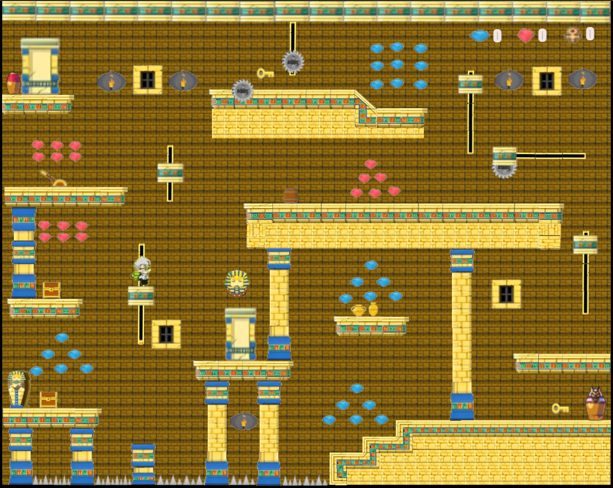
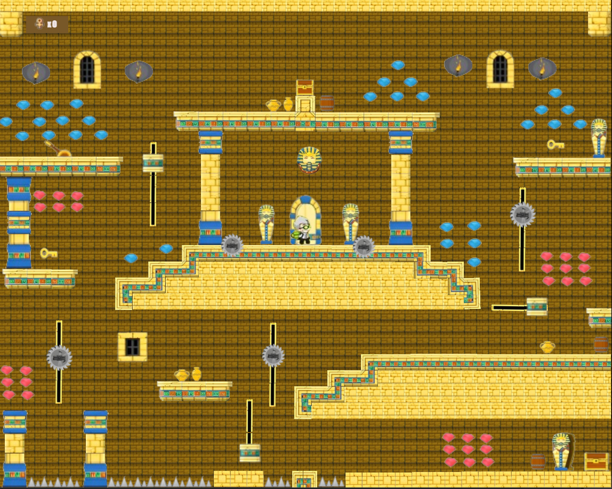

LabFy Gize
LabFy Gize é um jogo de caça ao tesouro, onde o jogador precisa encontrar alguns amuletos para conseguir chegar até o tesouro. Jony um desbravador que estava em uma expedição pelo Egito, em busca do tesouro de Necrópole de Saqqura escondido em um outro mundo que existe abaixo das pirâmides de Gize, quando acaba preso em um labirinto de com objetos mortais que dificultam sua caça ao tesouro.Jonny terá que passar por dois níveis até chegar ao tesouro, deve pegar os diamantes para complementar sua fortuna

